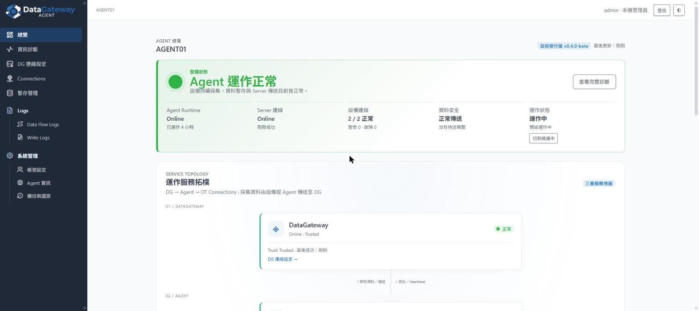
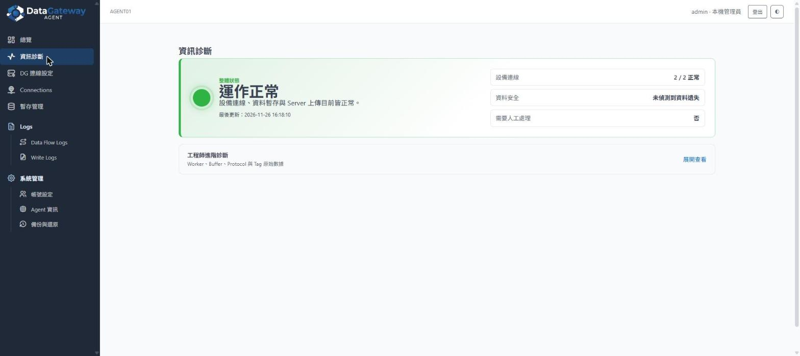

總覽與資訊診斷
總覽一眼看出 Agent、DG 連線與設備連線是否正常；資訊診斷提供給工程師的進階數據。
查看 Agent 總覽

- Agent Runtime
- Agent 是否 Online 與已運作時間。
- Server 連線
- 與 DG 的連線狀態與最後成功時間。
- 設備連線
- 正常的設備連線數，含警告與故障數。
- 資料安全
- 是否有待送積壓。
- 運作狀態
- 運作中或維護中。
- 點左側「總覽」，看整體狀態（例如「Agent 運作正常」）。
- 往下看「運作服務拓樸」三層：DataGateway（Online · Trusted）、Agent、OT Connections（每條連線的協定、Endpoint、資料點數與最近活動）。
- 看「運作狀態」區的 Server Uplink、Connections／設備摘要。
整體狀態為正常，DG 顯示 Online · Trusted，設備連線全部 Online。
失敗時先查
- Server 連線不是 Online：到「DG 連線設定」看註冊與 Uplink 狀態（第 3 章）。
- 設備連線有故障：點拓樸中的連線卡或「管理設備連線 →」進入該連線檢查。
資訊診斷

- 點「資訊診斷」，看整體狀態、設備連線、資料安全、需要人工處理。
- 需要提供給技術支援時，按「工程師進階診斷」的「展開查看」，查看 Worker、Buffer、Protocol 與 Tag 原始數據。
「需要人工處理」為「否」、資料安全為「未偵測到資料遺失」。
失敗時先查
- 需要人工處理為「是」：依畫面說明處理，或截圖交給技術支援。
運作中／維護中
- 在總覽的「運作狀態」按「切到維護中」。
- 確認視窗「切到維護中？」說明：會暫停所有連線的設備讀取、回寫、上傳到 DG、設定修改，維護期間不收集資料；仍可登入、查看狀態、切換總開關、備份與還原。按「切到維護中」。
- 完成後按「切回運作中」並確認。
維護中時每頁上方顯示「系統維護中」與「已停止設備讀取、回寫與上傳，設定只能查看。」；切回後恢復讀取與上傳。
Agent 自己切到維護中時，維護期間不收集資料。若只是 DG 維護，Agent 不必切換：DG 維護期間 Agent 會把資料暫存在本機，DG 恢復後自動補傳。
失敗時先查
- 還原 DG 設定前，DG 會要求連線的 Agent 也切到維護中。